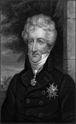

Georges Cuvier
1769–1832
Georges Cuvier, a French anatomist, is widely regarded as the father of paleontology (the study of fossils). He studied layers of sedimentary rock near Paris and noted that each layer had a unique set of fossils. He noted that species appeared and disappeared throughout the rock layers. His observations led him to support the idea of extinction—the death of all members of a species.
Cuvier became particularly interested in the fossils of vertebrates. His strong background in the field of anatomy allowed him to reconstruct the body structure of unfamiliar animals even when he had only a few fossil fragments to work with.
He used his knowledge of anatomy and the fossil record to show that the fossils of large mammals that had been discovered in Europe and Siberia were different from any living species of elephant. He concluded that large mammals unlike anything currently in existence must once have roamed Earth. These extinct mammals included the mammoth, the Irish elk, the American mastodon, and the giant ground sloth.
How did Cuvier explain the changes in the mammalian fossil record, including the appearance of modern mammals such as elephants? He rejected the theory of evolution in favor of catastrophism, the idea that natural disasters, such as severe drought or flooding, caused mass extinctions (extinction of many species at the same time) in various locations throughout history. Later, the land would be inhabited by different species that migrated from another area.
Soon Cuvier's view would be replaced by gradualism, the idea that major changes resulted from continuous, gradual processes. Today, catastrophism is once again being embraced as a plausible explanation for the disappearance of the dinosaurs. Many scientists think that the mass extinction of dinosaurs can be attributed to a large asteroid or comet that struck Earth about 65 million years ago. Although some scientists argue that other factors had already significantly diminished the dinosaur population, and that the asteroid or comet was merely the final "straw." While Cuvier was a pioneer in paleontology and anatomy, he was also a dynamic professor and politician who worked to develop higher education in France.